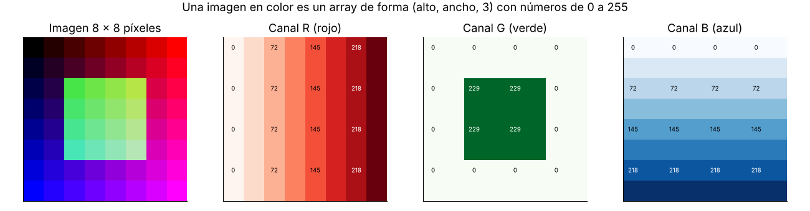

UD3 · Visión artificial
Cómo «ve» una máquina: de la imagen como matriz de números a clasificar, detectar y segmentar objetos con redes neuronales, y qué riesgos tiene para nuestros derechos.
Libro de referencia: J. F. Puentes Calvo, Tecnologías Inteligentes (2025), capítulos 4–7. Orden de las unidades: sigue la programación oficial 2026/27 y el libro (visión antes que lenguaje). En materiales anteriores esta unidad aparece como UD4.
Requisitos: NumPy de la UD2 (secciones 7 y 8 de la Teoría). Los ejemplos funcionan en Colab; los que usan
skimage.datano necesitan internet.
| Sesiones | Bloque | Libro | Criterio |
|---|---|---|---|
| 1–3 | La imagen como dato: píxeles, resolución, color, formatos | 4.1–4.4 | CA3.1 |
| 4–6 | Histogramas, transformaciones y operaciones entre imágenes | 4.5–4.7 | CA3.1, CA3.2 |
| 7–9 | Filtros y convolución; bordes; máscaras de color y segmentación | 4.7, 5.1, 5.4 | CA3.2 |
| 10–12 | Clasificación: de los píxeles a la CNN | 5.2, 5.5.1 | CA3.3 |
| 13–15 | Detección y segmentación con YOLO; transfer learning | 5.3–5.5.2 | CA3.2, CA3.3 |
| 16–17 | Percepción de alto nivel: pose, seguimiento, profundidad, caras | 6 | CA3.4 |
| 18 | Impacto social, vigilancia y deepfakes | 7 | CA3.6 |
| 19–20 | Proyecto «quitar el fondo» y exposición | 6.3 | CA3.4, CA3.5 |
El recorrido completo, de un vistazo
Antes de entrar en cada parte, este es el camino entero de un sistema de visión: cómo se entrena una vez con fotos etiquetadas y cómo se usa después con cada foto nueva. Las secciones 1–4 son la preparación de las imágenes; la 5 y la 6, las redes y sus tareas; la 7, tareas de alto nivel como la postura.
La visión artificial en una hoja
De los píxeles a una decisión: qué pasa al entrenar, qué pasa al usar el modelo y qué tareas se pueden hacer con la misma red.
Entrenar una vez, usar muchas
Lo que pasa del entrenamiento al uso son los pesos. La preparación de las fotos tiene que ser la misma en los dos, salvo el aumento de datos.
Una red base, varias cabezas
- Clasificar
- una etiqueta para toda la foto: «hay un coche» (0,90)
- Detectar
- una caja, una clase y una puntuación por objeto
- Segmentación semántica
- una clase para cada píxel: «coche», «calzada», «cielo»
- Segmentación de instancias
- una máscara para cada objeto: coche 1, coche 2
- Postura
- puntos clave del cuerpo: hombros, codos, rodillas
La red base (backbone) saca los rasgos de la imagen; cada tarea solo cambia la última parte (la cabeza). YOLO tiene versiones para cajas, máscaras, clases y postura.
¿Cuántos coches hay?
Con la semántica no se pueden contar los coches si se tocan; con instancias, sí.
No confundir
- Aumento de datos
- girar, recortar, cambiar el brillo: solo al entrenar
- Normalizar
- igual al entrenar y al usar, con los valores del entrenamiento
- Entrenar
- cambia los pesos; necesita etiquetas
- Usar (inferencia)
- los pesos no cambian; la foto nueva no enseña nada al modelo
- Puntuación 0,90
- lo seguro que está el modelo, no la probabilidad de acertar
- RGB o BGR
- OpenCV guarda los colores al revés que casi todas las demás librerías
1. La imagen como dato
Una imagen digital es una cuadrícula de píxeles. Cada píxel guarda números:

- Escala de grises: un número por píxel, de 0 (negro)
a 255 (blanco). La imagen es una matriz
alto × ancho. - Color RGB: tres números (rojo, verde, azul), cada
uno de 0 a 255. La imagen es un array
alto × ancho × 3. Con un cuarto canal alfa (transparencia) se llama RGBA. - Resolución: número de píxeles (por ejemplo, 1920 × 1080). Más píxeles, más detalle y más memoria.
- Profundidad de color: bits por canal. Con 8 bits hay 2⁸ = 256 niveles; 3 canales dan 256³ ≈ 16,7 millones de colores.
- Formatos: JPEG comprime con pérdida (fotos); PNG sin pérdida y con transparencia (gráficos, capturas); GIF admite animación con 256 colores; TIFF y BMP se usan sin comprimir o en ámbitos profesionales.
Otros espacios de color separan la información de otra forma. HSV (tono, saturación, valor) es muy útil para seleccionar «todo lo rojo», porque el tono queda en un solo canal aunque cambie la iluminación.
import numpy as np
from skimage import data
img = data.astronaut() # imagen de ejemplo incluida en scikit-image
print(img.shape, img.dtype) # (512, 512, 3) uint8
print(img[0, 0]) # píxel de arriba a la izquierda: [154 147 151]
print(img.nbytes) # 786 432 bytes = 512 · 512 · 3
gris = (0.299 * img[..., 0] + 0.587 * img[..., 1] + 0.114 * img[..., 2]).astype(np.uint8)
recorte = img[50:150, 180:300] # «zoom»: quedarse con unas filas y columnas
espejo = img[:, ::-1] # invertir el orden de las columnas
negativo = 255 - imgLa conversión a grises pondera más el verde porque nuestro ojo es más sensible a él. Fíjate en que todas las operaciones son de NumPy: recortar es indexar, voltear es invertir un eje, el negativo es una resta.
Cuidado con el orden de los colores. OpenCV
(cv2), una de las librerías de visión más usadas, guarda
los canales en orden BGR (azul, verde, rojo), al revés
que casi todas las demás (Pillow, Matplotlib, scikit-image y los modelos
entrenados con ellas). Si una foto leída con OpenCV se dibuja con
Matplotlib, las caras salen azuladas; si se le pasa a un modelo que
espera RGB, acierta peor sin dar ningún error:
import numpy as np
import cv2
from PIL import Image
Image.new("RGB", (1, 1), (255, 0, 0)).save("rojo.png") # un píxel rojo, guardado con Pillow
print(np.array(Image.open("rojo.png"))[0, 0]) # [255 0 0]: Pillow lee en orden RGB
bgr = cv2.imread("rojo.png")
print(bgr[0, 0]) # [ 0 0 255]: OpenCV lee en orden BGR
print(cv2.cvtColor(bgr, cv2.COLOR_BGR2RGB)[0, 0]) # [255 0 0]: convertido antes de dibujarTipos de imagen y del procesado a la visión
Según cuántos valores puede tener cada píxel, hay tres tipos básicos:
| Tipo | Valores por píxel | Forma del array | Para qué |
|---|---|---|---|
| Binaria | Dos: fondo u objeto | alto × ancho de bool (o 0 y 255 para poder
verla) |
Máscaras, siluetas, texto escaneado, resultado de un umbral |
| Escala de grises | Un nivel de intensidad | alto × ancho |
Bordes, formas, radiografías |
| Color (RGB) | Tres canales | alto × ancho × 3 |
Fotos, reconocer objetos por su color |
Los rangos dependen de cómo se guarde la imagen: con 8 bits van de 0
a 255, pero las imágenes médicas o científicas usan 16 bits (0–65 535) y
muchas funciones de scikit-image devuelven decimales entre 0 y
1. Antes de comparar con un umbral, conviene mirar
img.dtype y img.max().
Procesamiento de imágenes y visión artificial se parecen, pero buscan cosas distintas:
| Procesamiento de imágenes | Visión artificial |
|---|---|
| Entra una imagen y sale otra imagen | Entra una imagen y sale información: una etiqueta, unas cajas, una decisión |
| Mejorar o transformar: quitar ruido, cambiar tamaño, ajustar brillo y contraste, recortar | Entender: qué hay, dónde está, cuántos hay, qué hace |
| Secciones 1–4 de esta unidad | Secciones 5–7 |
La frontera no es nítida: casi todo sistema de visión empieza procesando la imagen. El flujo típico de un sistema de visión, y dónde se ve cada paso en esta unidad:
| Paso | Qué se hace | Dónde |
|---|---|---|
| 1. Adquisición | Cámara, escáner, satélite, archivo | 1 |
| 2. Preprocesado | Redimensionar, pasar a grises, quitar ruido, normalizar | 2, 3 |
| 3. Extracción de características | Bordes, esquinas, colores, texturas; o filtros que aprende una CNN | 3, 5 |
| 4. Análisis y decisión | Clasificar, detectar, segmentar, seguir | 4–7 |
| 5. Resultado | Etiqueta, cajas, máscara, alarma, respuesta de un robot | 6, 7, 9 |
Ejercicio 1.1 · ¿Cuánto ocupa? 🟢 (reto 4.5 del libro)
¿Cuánta memoria ocupa sin comprimir una imagen de 1024 × 768 en RGBA con 8 bits por canal? ¿Y un vídeo de 10 s a 30 fotogramas por segundo con esas imágenes?
Ejercicio 1.2 · Manipular una imagen con NumPy 🟢
Con data.astronaut(): a) muestra solo el canal rojo; b)
gírala 90°; c) aclárala un 30 % sin que ningún valor pase de 255.
2. Histogramas y transformaciones
El histograma cuenta cuántos píxeles hay de cada nivel. Una foto oscura acumula valores a la izquierda; una sobreexpuesta, a la derecha; una con poco contraste, en una franja estrecha. Ecualizar reparte los niveles para usar todo el rango.
Las transformaciones geométricas mueven píxeles de sitio: traslación, escala, rotación y perspectiva (corregir una foto de una pizarra tomada de lado). Las operaciones entre imágenes las tratan como matrices: sumar (fundidos), restar (detectar qué ha cambiado entre dos fotogramas) o multiplicar por una máscara de ceros y unos (recortar una zona).
import numpy as np
from skimage import data, exposure
gris = data.camera()
hist, _ = np.histogram(gris, bins=256, range=(0, 256))
print("Nivel más frecuente:", hist.argmax()) # 27: imagen con mucho oscuro
ecualizada = exposure.equalize_hist(gris) # valores entre 0 y 1Ejercicio 2.1 · Detector de movimiento 🟡
Tienes dos fotogramas en grises, f1 y f2,
de una cámara fija. Escribe una función que diga si ha habido movimiento
y en qué zona.
3. Filtros y convolución
Una convolución desliza una pequeña matriz, el filtro o kernel, por toda la imagen. En cada posición multiplica el filtro por los píxeles que tiene debajo y suma: ese número es el nuevo píxel. Según los valores del filtro, se obtiene un efecto u otro:
Para verlo: Image Kernels, Explained Visually (V. Powell) aplica un filtro de 3×3 a una foto y deja cambiar sus números y ver el resultado píxel a píxel.

| Filtro | Kernel | Efecto |
|---|---|---|
| Media 3×3 | todos 1/9 | Desenfoca, quita ruido |
| Mediana | (no es lineal: toma el valor central ordenado) | Quita ruido de «sal y pimienta» sin emborronar bordes |
| Sobel X | [[-1,0,1],[-2,0,2],[-1,0,1]] |
Detecta bordes verticales |
| Enfoque | [[0,-1,0],[-1,5,-1],[0,-1,0]] |
Realza detalles |
import numpy as np
from scipy.signal import convolve2d
from skimage import data
gris = data.camera().astype(float)
media = np.ones((3, 3)) / 9
sobel_x = np.array([[-1, 0, 1], [-2, 0, 2], [-1, 0, 1]])
sobel_y = sobel_x.T
suave = convolve2d(gris, media, mode="same", boundary="symm")
gx = convolve2d(gris, sobel_x, mode="same", boundary="symm")
gy = convolve2d(gris, sobel_y, mode="same", boundary="symm")
bordes = np.hypot(gx, gy) # fuerza del borde en cada píxel
print(f"Píxeles de borde: {(bordes > 100).mean():.1%}") # ≈ 13,8 %Otros detectores de bordes. Sobel no es el único.
Prewitt usa un filtro parecido con todos los pesos
iguales ([[-1,0,1],[-1,0,1],[-1,0,1]]), algo más sensible
al ruido. Canny es un algoritmo completo en cuatro
pasos: suaviza con un filtro gaussiano, calcula los bordes como Sobel,
se queda solo con el máximo de cada borde (líneas de un píxel de grosor)
y une los trozos con dos umbrales. Da bordes finos y continuos, y por
eso es el más usado.
from skimage import data, filters, feature
gris = data.camera()
prewitt = filters.prewitt(gris) # intensidad del borde, decimales de 0 a ≈ 0,6
canny = feature.canny(gris, sigma=2) # imagen binaria: True donde hay borde
print(canny.dtype, f"{canny.mean():.1%}") # bool 2.8 %: solo líneas finasCon sigma más alto, Canny suaviza más y se queda con
menos bordes (con sigma=3, el 2,0 %): es el ajuste entre
ver detalles y ver ruido.
Por qué importa: una red neuronal convolucional (CNN) es una pila de muchas convoluciones cuyos filtros no los escribimos nosotros: los aprende a partir de ejemplos. Las primeras capas acaban detectando bordes como Sobel; las siguientes, esquinas y texturas; las últimas, ojos, ruedas u hojas.
Ejercicio 3.1 · Convolución a mano 🟡
Aplica Sobel X al píxel central de esta zona de 3×3 y explica el resultado:
10 10 200
10 10 200
10 10 200Ejercicio 3.2 · Explícamelo a cuatro niveles 🟢 (reto 4.11 del libro)
Pide a una IA que explique qué es una convolución a un niño de 10 años, a alguien de 16, a un universitario y a un experto. Compara las cuatro respuestas: ¿cuál te sirvió más? ¿Hay algún error? Comprueba un dato técnico en otra fuente.
4. Máscaras de color y segmentación
Segmentar es dividir la imagen en regiones con significado (fondo, objeto, persona). Formas sencillas:
- Umbral: píxeles más claros que un valor → 1; el resto → 0.
- Por color en HSV: seleccionar un rango de tono, saturación y brillo.
- Agrupamiento (k-means): tratar cada píxel como un punto (R, G, B) y agrupar los parecidos. Es aprendizaje no supervisado.
import numpy as np
from skimage import data
from skimage.color import rgb2hsv
from sklearn.cluster import KMeans
img = data.coffee()
hsv = rgb2hsv(img)
h, s, v = hsv[..., 0], hsv[..., 1], hsv[..., 2]
rojizo = ((h < 0.06) | (h > 0.94)) & (s > 0.5) & (v > 0.3) # el rojo está en los dos extremos del tono
aislado = img * rojizo[..., None] # lo demás, en negro
peq = img[::4, ::4]
km = KMeans(n_clusters=4, n_init=4, random_state=0).fit(peq.reshape(-1, 3).astype(float))
segmentada = km.cluster_centers_[km.labels_].reshape(peq.shape).astype(np.uint8)Umbral automático y de la segmentación semántica a la de instancias. Elegir el umbral a ojo es frágil. El método de Otsu lo calcula solo: busca el nivel que mejor separa los píxeles en dos grupos. Así se obtiene una segmentación semántica, que dice de qué clase es cada píxel (moneda o fondo). Si además se separan y numeran las regiones, la segmentación es de instancias: moneda 1, moneda 2…
from scipy import ndimage as ndi
from skimage import data, filters, measure
g = data.coins() # foto de monedas en gris
semantica = g > filters.threshold_otsu(g) # True = moneda (umbral 107)
semantica = ndi.binary_fill_holes(ndi.binary_closing(semantica, iterations=3))
etiquetas = measure.label(semantica) # numera las zonas conectadas
monedas = [r for r in measure.regionprops(etiquetas) if r.area > 100]
print(len(monedas), "objetos;", f"{semantica.mean():.0%} de la imagen es moneda")
# 22 objetos; 40 % de la imagen es monedaLa foto tiene 24 monedas: el umbral global se equivoca con algunas porque la iluminación no es igual en toda la imagen. Es uno de los límites de los métodos clásicos, y una razón para usar redes que aprenden a segmentar (sección 6).
| Segmentación | Pregunta | Ejemplo en una calle |
|---|---|---|
| Semántica | ¿De qué clase es cada píxel? | Todos los coches del mismo color: «coche» |
| De instancias | ¿A qué objeto concreto pertenece cada píxel? | Coche 1, coche 2, persona 1 |
| Panóptica | Las dos a la vez, también para el fondo | Coches y personas numerados, más «carretera», «cielo», «acera» |
Ejercicio 4.1 · Aislar un objeto de color 🟡 (reto 4.10 del libro)
Busca una foto con un objeto de color llamativo (una pelota, un chaleco reflectante) y crea una máscara que lo aísle. Ajusta los rangos de H, S y V. ¿Qué falla si cambia la luz?
5. Clasificar imágenes
Clasificar es responder a «¿qué hay en esta imagen?» con una etiqueta. Es aprendizaje supervisado: el modelo ve miles de imágenes con su etiqueta.
- Con modelos clásicos (random forest, XGBoost, SVM) se aplana la imagen en un vector de píxeles. Funciona con imágenes pequeñas y centradas como los dígitos, pero no entiende que un gato desplazado sigue siendo un gato.
- Con una CNN, las capas convolucionales aprenden filtros, las de pooling reducen el tamaño quedándose con lo importante y las capas finales (densas) deciden la clase. Reconoce patrones estén donde estén.
El libro compara ambas con MNIST (70 000 dígitos manuscritos de 28×28): XGBoost llega a ≈ 0,975 de exactitud tras unos 42 minutos con validación cruzada; una CNN sencilla lo supera en menos tiempo.
Versión ligera que funciona en cualquier equipo, con el dataset de dígitos 8×8 de scikit-learn:
import numpy as np
from sklearn.datasets import load_digits
from sklearn.model_selection import train_test_split
from sklearn.ensemble import RandomForestClassifier
from sklearn.metrics import accuracy_score, confusion_matrix
X, y = load_digits(return_X_y=True) # 1797 imágenes de 8×8 → vectores de 64
X_tr, X_te, y_tr, y_te = train_test_split(X, y, test_size=0.2, random_state=0, stratify=y)
modelo = RandomForestClassifier(n_estimators=200, random_state=0).fit(X_tr, y_tr)
pred = modelo.predict(X_te)
print(f"Exactitud: {accuracy_score(y_te, pred):.3f}") # ≈ 0,978
print(confusion_matrix(y_te, pred))Y la CNN para MNIST con Keras (en Colab, con GPU):
from tensorflow import keras
(x_tr, y_tr), (x_te, y_te) = keras.datasets.mnist.load_data()
x_tr, x_te = x_tr[..., None] / 255.0, x_te[..., None] / 255.0
modelo = keras.Sequential([
keras.Input(shape=(28, 28, 1)),
keras.layers.Conv2D(32, 3, activation="relu"), # 32 filtros aprendidos
keras.layers.MaxPooling2D(),
keras.layers.Conv2D(64, 3, activation="relu"),
keras.layers.MaxPooling2D(),
keras.layers.Flatten(),
keras.layers.Dense(10, activation="softmax"), # una probabilidad por dígito
])
modelo.compile(optimizer="adam", loss="sparse_categorical_crossentropy", metrics=["accuracy"])
historia = modelo.fit(x_tr, y_tr, epochs=5, validation_split=0.1)
print(modelo.evaluate(x_te, y_te)) # exactitud ≈ 0,99Las piezas de una CNN y lo que hace cada una:
| Capa | Qué hace | En el código de arriba |
|---|---|---|
| Convolución | Aplica muchos filtros aprendidos y saca un mapa de características por filtro | Conv2D(32, 3) |
| Activación ReLU | Pone a 0 los valores negativos; sin ella, apilar capas equivaldría a una sola operación lineal | activation="relu" |
| Pooling | Reduce el tamaño quedándose con el máximo de cada zona: menos cálculo y algo de tolerancia a desplazamientos | MaxPooling2D() |
| Densa (totalmente conectada) | Combina todo lo detectado y da una puntuación por clase | Dense(10, activation="softmax") |
¿Por qué no una red densa? Una foto de 224×224 en color tiene 224·224·3 = 150 528 números. Una sola capa densa de 1000 neuronas necesitaría 150 528 × 1000 + 1000 ≈ 150 millones de parámetros, y además trataría cada píxel por separado: un gato desplazado tres píxeles sería, para ella, otra imagen. Una capa convolucional con 64 filtros de 3×3 tiene (3·3·3 + 1) × 64 = 1792 parámetros, porque cada filtro se reutiliza en toda la imagen (parámetros compartidos) y detecta su patrón esté donde esté.
Tamaño de salida de una convolución. Con una entrada
de lado n, un filtro de lado k, relleno
p (padding) y paso s
(stride):
salida = (n + 2p − k) / s + 1 (redondeando hacia abajo)| Tipo | Relleno | Ejemplo con n = 32 y filtro 3×3 | Keras |
|---|---|---|---|
| Valid | Ninguno: la imagen encoge | (32 − 3)/1 + 1 = 30 | padding="valid" (por defecto) |
| Same | Un borde de ceros para que no encoja | (32 + 2 − 3)/1 + 1 = 32 | padding="same" |
| Con paso 2 | El filtro salta de 2 en 2 | (32 − 3)/2 + 1 = 15 | strides=2 |
Un MaxPooling2D() de 2×2 divide el lado entre 2
(redondeando hacia abajo).
Número de parámetros. Una convolución con
F filtros de k×k sobre una entrada con
C canales tiene (k·k·C + 1) · F parámetros (el
+1 es el sesgo de cada filtro). Una capa densa con E
entradas y N neuronas, (E + 1) · N. El
pooling, el flatten y el dropout no tienen
parámetros.
Proyecto: CIFAR-10. 60 000 fotos en color de 32×32 (50 000 de entrenamiento y 10 000 de prueba) de 10 clases: avión, coche, pájaro, gato, ciervo, perro, rana, caballo, barco y camión. Es el siguiente paso después de MNIST: las fotos son reales, en color y mucho más variadas.
from tensorflow import keras
(x_tr, y_tr), (x_te, y_te) = keras.datasets.cifar10.load_data()
x_tr, x_te = x_tr / 255.0, x_te / 255.0 # píxeles de 0 a 1
aumento = keras.Sequential([ # aumento de datos: solo actúa al entrenar
keras.layers.RandomFlip("horizontal"),
keras.layers.RandomTranslation(0.1, 0.1),
])
modelo = keras.Sequential([
keras.Input(shape=(32, 32, 3)),
aumento,
keras.layers.Conv2D(32, 3, activation="relu"), # 30×30×32
keras.layers.MaxPooling2D(), # 15×15×32
keras.layers.Conv2D(64, 3, activation="relu"), # 13×13×64
keras.layers.MaxPooling2D(), # 6×6×64
keras.layers.Conv2D(128, 3, activation="relu"), # 4×4×128
keras.layers.Flatten(), # 2048
keras.layers.Dense(128, activation="relu"),
keras.layers.Dropout(0.5),
keras.layers.Dense(10, activation="softmax"),
])
modelo.summary() # 356 810 parámetros
modelo.compile(optimizer="adam", loss="sparse_categorical_crossentropy", metrics=["accuracy"])
parar = keras.callbacks.EarlyStopping(patience=5, restore_best_weights=True)
modelo.fit(x_tr, y_tr, epochs=50, batch_size=64, validation_split=0.1, callbacks=[parar])
print(modelo.evaluate(x_te, y_te)) # el conjunto de prueba, solo al final- Las etiquetas vienen como números del 0 al 9, así que la pérdida es
sparse_categorical_crossentropy. Si se convierten a one-hot conkeras.utils.to_categorical, seríacategorical_crossentropy. Mezclarlas da error o resultados absurdos. - La validación sale del entrenamiento
(
validation_split=0.1). Muchos tutoriales usanvalidation_data=(x_te, y_te), y entonces la exactitud «de prueba» ya no es honesta: se ha usado para decidir cuándo parar. - Una CNN pequeña como esta suele quedarse en torno al 70–80 % de exactitud; para pasar del 90 % se usa transfer learning con una red preentrenada (sección 6).
Arquitecturas que marcaron la historia (cada una se puede descargar ya entrenada para hacer transfer learning):
| Año | Red | Qué aportó |
|---|---|---|
| 1998 | LeNet-5 | Una de las primeras CNN útiles: leía los dígitos de los cheques bancarios |
| 2012 | AlexNet | Ganó ImageNet con mucha ventaja usando GPU y ReLU; arrancó la era del aprendizaje profundo |
| 2014 | VGG | Muchas capas con filtros pequeños de 3×3: más profundidad con un diseño sencillo |
| 2015 | ResNet | Conexiones residuales (atajos que saltan capas) que permiten entrenar redes de más de cien capas |
| 2020 | Vision Transformer (ViT) | Aplica a trozos de imagen la atención de los Transformers (UD4); compite con las CNN cuando hay muchos datos |
Las CNN siguen en el centro de la visión artificial, sobre todo en móviles y en tiempo real, pero ya no están solas: los modelos más recientes combinan convoluciones, atención y texto (modelos multimodales que describen una foto o responden preguntas sobre ella).
Ejercicio 5.1 · Leer una matriz de confusión 🟡
En la matriz de confusión del clasificador de dígitos, ¿qué representan la diagonal y los valores fuera de ella? ¿Qué dígitos crees que se confunden más y por qué?
Ejercicio 5.2 · Formas y parámetros de una CNN 🟡
Unos apuntes de redes sociales muestran esta arquitectura para fotos de CIFAR-10 (32×32×3), con filtros de 3×3, sin relleno y pooling de 2×2:
Entrada 32×32×3 → Conv 32 → MaxPool → Conv 64 → Flatten (1600) → Dense 128 → Dense 10 (softmax)- Calcula la forma de la salida de cada capa y el número de parámetros de cada una.
- ¿Es correcto el «1600» del Flatten? Si no lo es, ¿de dónde puede venir?
- ¿Qué capa tiene más parámetros? ¿Qué cambio sencillo reduce mucho el total?
6. Detectar y segmentar objetos con YOLO
- Clasificar: una etiqueta para toda la imagen.
- Detectar: localizar cada objeto con una caja, su clase y una puntuación de confianza.
- Segmentar: marcar exactamente qué píxeles pertenecen a cada objeto. Puede ser semántica (una clase por píxel) o de instancias (una máscara por objeto), como se vio en la sección 4.
- Postura: localizar puntos clave del cuerpo (sección 7).
La diferencia se ve contando. Con una máscara semántica, los coches que no se tocan se pueden separar buscando zonas conectadas; los que se tocan, no:
import numpy as np
from scipy import ndimage
# Una foto de 8×12 vista desde arriba: 0 = asfalto, 1 = coche (dos coches que no se tocan)
semantica = np.zeros((8, 12), dtype=int)
semantica[1:4, 1:5] = 1 # coche A
semantica[4:7, 7:11] = 1 # coche B
print("Segmentación semántica: clases", np.unique(semantica), "→ píxeles de coche:", semantica.sum())
instancias, n = ndimage.label(semantica) # separa las zonas que no se tocan
print("Segmentación de instancias:", n, "coches")
for i, zona in enumerate(ndimage.find_objects(instancias), start=1):
filas, cols = zona
print(f" coche {i}: {int((instancias == i).sum())} píxeles, caja filas {filas.start}–{filas.stop - 1}, "
f"columnas {cols.start}–{cols.stop - 1}")
# Segmentación semántica: clases [0 1] → píxeles de coche: 24
# Segmentación de instancias: 2 coches
# coche 1: 12 píxeles, caja filas 1–3, columnas 1–4
# coche 2: 12 píxeles, caja filas 4–6, columnas 7–10
# Si los coches se tocan, la máscara semántica ya no basta para contarlos
semantica[3:5, 4:8] = 1 # un coche aparcado pegado a los dos
print("Tocándose:", ndimage.label(semantica)[1], "zona") # Tocándose: 1 zonaPor eso los modelos de segmentación de instancias no se limitan a colorear píxeles: aprenden también dónde acaba cada objeto.
Una red base, varias cabezas. Todas estas tareas
comparten el principio: una red base
(backbone), normalmente una CNN, convierte la imagen en mapas
de rasgos (bordes, texturas, partes de objetos). Encima va una
cabeza distinta según la tarea: una capa que da
probabilidades para clasificar, otra que da cajas, otra que da máscaras
o puntos. Por eso YOLO tiene el mismo modelo en varias versiones:
yolov8n.pt (cajas), yolov8n-seg.pt (máscaras),
yolov8n-cls.pt (clases) y yolov8n-pose.pt
(postura). Y por eso funciona la transferencia de aprendizaje: la red
base ya sabe ver, y solo hay que enseñar la cabeza nueva. Para practicar
cómo se cuentan objetos y se miden cajas: E150–E151.

YOLO (You Only Look Once) detecta todos los objetos en una sola pasada de la red, lo bastante rápido para vídeo en tiempo real. Viene preentrenado con COCO (80 clases: persona, coche, perro, taza…). El libro usa YOLOv8 de Ultralytics; la librería admite también versiones más recientes con el mismo código.
# pip install ultralytics (en Colab)
from ultralytics import YOLO
modelo = YOLO("yolov8n.pt") # «n» = nano, el más ligero
res = modelo("https://ultralytics.com/images/bus.jpg")[0]
for caja in res.boxes:
clase = res.names[int(caja.cls)]
print(f"{clase:<10} confianza {float(caja.conf):.2f} caja {caja.xyxy[0].int().tolist()}")
res.show() # imagen con las cajas dibujadas
seg = YOLO("yolov8n-seg.pt")("https://ultralytics.com/images/bus.jpg")[0] # segmentación
seg.show()Truco del libro: los objetos pequeños se detectan peor. Si se recorta y amplía una zona de la imagen (zoom) y se vuelve a predecir, aparecen detecciones nuevas.
Transfer learning: para detectar algo que COCO no
conoce (las piezas de un juego, tipos de mejillón…), no se entrena desde
cero una red de millones de parámetros: se parte de la red preentrenada
y se reentrena con pocos cientos de imágenes propias
etiquetadas. El libro lo hace con un dataset de figuras geométricas
(gshapes.zip).
Familias de detectores. YOLO no es el único detector:
| Familia | Ejemplos | Cómo trabaja | Ventaja | Inconveniente |
|---|---|---|---|---|
| Dos etapas | R-CNN, Fast R-CNN, Faster R-CNN, Mask R-CNN | 1) propone zonas donde puede haber algo; 2) clasifica cada zona | Muy precisos, también con objetos pequeños | Más lentos |
| Una etapa | YOLO, SSD (Single Shot Detector), RetinaNet | Predice todas las cajas y clases en una sola pasada | Rápidos: vídeo en tiempo real, móviles | Históricamente, menos precisos con objetos pequeños (las versiones recientes han reducido mucho la diferencia) |
En la práctica se elige según el problema: para contar coches en una cámara de tráfico importa la velocidad; para encontrar una lesión pequeña en una radiografía, la precisión.
Ejercicio 6.1 · Detector en el aula 🟡 (tarea)
Pasa YOLO por 5 fotos tuyas (sin caras identificables o con consentimiento). Haz una tabla con aciertos, fallos y falsos positivos, y explica por qué falla. Prueba el truco del zoom en una foto con objetos pequeños.
OCR: de la imagen al texto
El reconocimiento óptico de caracteres (OCR) convierte la foto o el escaneo de un documento en texto que se puede copiar, buscar y analizar. Es visión artificial en estado puro y combina varias piezas de esta unidad:
- Preprocesado: enderezar la página, pasar a grises, mejorar el contraste (secciones 1–3).
- Detección: localizar las cajas donde hay texto, igual que YOLO localiza objetos (sección 6).
- Reconocimiento: una red lee cada caja y devuelve los caracteres con una puntuación de confianza.
- Estructura: las herramientas modernas reconstruyen también tablas, títulos y párrafos, y lo devuelven en JSON o Markdown.
Una herramienta abierta muy usada es PaddleOCR (licencia
Apache 2.0): reconoce más de 100 idiomas, incluido el castellano, y
extrae tablas. Se usa para digitalizar facturas, formularios o archivos
antiguos. Otra alternativa clásica es Tesseract
(pytesseract).
# En Colab: pip install paddlepaddle paddleocr
# Código según la documentación de PaddleOCR 3.x; la API cambió respecto a la versión 2.
from paddleocr import PaddleOCR
ocr = PaddleOCR(lang="es",
use_doc_orientation_classify=False, # desactiva pasos extra para ir más rápido
use_doc_unwarping=False,
use_textline_orientation=False)
resultado = ocr.predict("factura_inventada.png")
for pagina in resultado:
for texto, confianza in zip(pagina["rec_texts"], pagina["rec_scores"]):
print(f"{confianza:.2f} {texto}")
pagina.save_to_json("salida") # texto, cajas y confianzas en JSONEste ejemplo no se ha podido ejecutar al preparar la página: si en tu versión cambian los nombres, consulta el README del repositorio.
⚠️ Privacidad. Facturas, contratos o exámenes contienen datos personales. Para practicar, usa documentos inventados (una factura hecha por ti en el procesador de textos) o públicos. Los servicios de OCR en línea se pueden quedar con lo que subes; una librería como PaddleOCR funciona en tu propio ordenador o cuaderno.
Ejercicio 6.2 · Del papel a la tabla 🟡 (CA3.2, CA3.3)
Crea una factura o un horario inventado, imprímelo y hazle tres fotos: bien iluminada y recta, torcida y con poca luz. Pasa las tres por un OCR y compara: ¿cuántas palabras acierta?, ¿cómo cambia la confianza?, ¿recupera bien la tabla? Termina convirtiendo el resultado de la mejor foto en un DataFrame con Pandas.
7. Percepción de alto nivel
| Tarea | Qué hace | Cómo |
|---|---|---|
| Estimación de pose | Localiza puntos clave del cuerpo (hombros, codos, rodillas) | yolov8n-pose.pt, MediaPipe |
| Seguimiento (tracking) | Mantiene la identidad de cada objeto entre fotogramas | modelo.track(video) en Ultralytics |
| Profundidad | Estima la distancia de cada píxel con una sola cámara | Modelos monoculares (Depth Anything, MiDaS) |
| Vectores de características | Resume una cara o un objeto en un vector de números | Redes de embedding; se comparan con la similitud del coseno |
| Reconocimiento facial | Detectar → alinear → normalizar → representar → comparar | El vector de una cara se compara con los guardados |
| Gestos y expresiones | Clasifica puntos clave de la mano o la cara | Landmarks + clasificador (random forest, k-means) |
La idea que une casi todo: convertir la imagen en un vector y comparar vectores. Dos fotos de la misma persona dan vectores que apuntan en direcciones parecidas:
import numpy as np
def coseno(a, b):
return a @ b / (np.linalg.norm(a) * np.linalg.norm(b))
ana_1 = np.array([0.9, 0.1, 0.4, 0.7]) # vectores inventados (los reales tienen 128-512 valores)
ana_2 = np.array([0.8, 0.2, 0.5, 0.6])
brais = np.array([0.1, 0.9, 0.7, 0.2])
print(f"{coseno(ana_1, ana_2):.3f} {coseno(ana_1, brais):.3f}") # 0.988 0.426Ejercicio 7.1 · Engañar al seguimiento 🟡 (reto 6.12 del libro)
Graba un vídeo corto del aula (con consentimiento) y aplica
YOLO("yolov8n.pt").track(...). Repite intentando que falle:
cruzarse con otra persona, taparse, salir y volver a entrar. ¿Qué pasa
con los identificadores?
8. Impacto social de la visión artificial
Beneficios: diagnóstico por imagen, accesibilidad (describir escenas a personas ciegas), seguridad vial, agricultura de precisión, control de calidad industrial.
Riesgos: vigilancia masiva y pérdida de anonimato en la calle; sesgos (sistemas de reconocimiento facial que fallan más con mujeres y personas de piel oscura porque se entrenaron con datos desequilibrados); deepfakes para suplantar o difamar; uso de imágenes sin consentimiento.
Marco legal: en España, la protección de datos (RGPD y LO 3/2018, LOPDGDD) considera la imagen de una persona un dato personal, y los datos biométricos, especialmente protegidos. El Reglamento europeo de IA prohíbe, con excepciones muy limitadas, la identificación biométrica remota en tiempo real en espacios públicos con fines policiales. Comprueba la situación actual: la normativa se aplica por fases.
Visión artificial frente a visión humana. La comparación ayuda a entender qué se le puede pedir a un sistema:
| Visión artificial | Visión humana | |
|---|---|---|
| Sensor | Cámaras: también infrarrojo, rayos X, satélite | Ojos: solo luz visible |
| Aprendizaje | Miles o millones de ejemplos etiquetados | Años de experiencia, pero con muy pocos ejemplos de cada cosa nueva |
| Cansancio | Trabaja sin parar al mismo nivel | Se cansa y se distrae |
| Errores típicos | Cambios de luz, ángulos raros, objetos que no vio al entrenar, ejemplos adversarios (pegatinas o cambios mínimos que engañan a la red) | Ilusiones ópticas, falta de atención, sesgos |
| Contexto y sentido común | Muy limitado | Muy rico |
Limitaciones a tener en cuenta: necesita muchos datos (y buenos), es sensible a la luz y a la calidad de la imagen, los modelos grandes requieren mucho cálculo y energía, falla en entornos muy distintos a los de entrenamiento y plantea problemas de privacidad cada vez que hay personas en la imagen.
Ejercicio 8.1 · Debate: videovigilancia con IA en la calle 🟡 (reto 7.9)
Preparad argumentos a favor y en contra, con al menos una fuente verificada cada uno.
Ejercicio 8.2 · Revisión crítica: unos apuntes de redes 🔴 (CA3.6)
Estas frases aparecen en unos apuntes de visión artificial de una red social, marcados como generados con IA. Algunas son correctas, otras simplifican demasiado y otras están mal planteadas. Para cada una, di si la aceptarías tal cual, la matizarías o la corregirías, y explica por qué.
- «Una imagen binaria contiene solo los valores 0 y 1.»
- «Una imagen en escala de grises tiene valores de 0 a 255.»
- Una tabla que compara «Visión artificial» con «Inteligencia artificial»: la primera «usa CNN y YOLO» y la segunda «usa ML, DL y otros métodos».
- «La detección, la segmentación y el reconocimiento hacen que las máquinas vean como los humanos.»
- «La CNN es la columna vertebral de la visión artificial moderna.»
- «La visión humana aprende de forma natural; la artificial necesita entrenamiento.»
- «El procesamiento de imágenes modifica imágenes; la visión artificial las entiende.»
9. Proyecto: quitar el fondo de una foto (CA3.4, CA3.5)
Por grupos, diseñad un plan sistemático y ejecutadlo:
- Estimar la profundidad de cada píxel con un modelo monocular.
- Dibujar el histograma del mapa de profundidad: suelen aparecer dos «montañas», cerca y lejos.
- Elegir un umbral entre ellas (o agrupar con k-means en 2 grupos).
- Crear la máscara y poner el fondo en blanco o en otra imagen.
- Evaluar: ¿dónde falla (pelo, bordes, objetos a la misma distancia)? ¿Cómo lo mejorarías?
- Exponer el plan y los resultados en 5 minutos.
Tareas evaluables
| Tarea | Criterios | Entrega |
|---|---|---|
| Laboratorio de la imagen | CA3.1, CA3.2 | Notebook con histograma, grises y HSV, una transformación y una máscara de color, explicando cada celda |
| Detector en el aula | CA3.2, CA3.3 | Tabla de aciertos, fallos y falsos positivos de YOLO en 5 fotos propias |
| Proyecto «quitar el fondo» | CA3.4, CA3.5 | Plan, notebook y exposición en grupo |
| Debate de vigilancia | CA3.6 | Argumentos, contraargumentos y fuentes verificadas |
Privacidad: en las prácticas con caras o vídeo del aula hace falta consentimiento y no se sube nada a servicios externos. Los notebooks con webcam no funcionan en Colab.
Preguntas tipo de examen
- ¿Qué forma tiene el array de una imagen RGB de 640 × 480? ¿Cuántos bytes ocupa?
- Explica qué hace una convolución y para qué sirve el filtro de Sobel.
- Diferencia entre clasificar, detectar y segmentar, con un ejemplo de cada una.
- ¿Por qué una CNN generaliza mejor que un modelo que recibe los píxeles aplanados?
- ¿Qué es el transfer learning y por qué ahorra datos y tiempo?
- Cita un riesgo de la visión artificial para los derechos de las personas y una medida que lo limite.
- ¿Qué diferencia hay entre procesamiento de imágenes y visión artificial? Describe los pasos de un sistema de visión.
- Diferencia entre segmentación semántica y de instancias. ¿Qué detector usarías en una cámara de tráfico, uno de una etapa o uno de dos? ¿Por qué?
- Nombra tres capas de una CNN y explica qué hace cada una.
Para saber más
- Libro: Puentes Calvo (2025), caps. 4–7 y sus retos. Notebooks
04 Operaciones básicas con imágenes,05 clasificación de imágenes,05 identificación de objetos,05 segmentación,06 estimación de pose,07 Object trackingen github.com/FranPuentes/iTI2025. - Documentación de scikit-image y de Ultralytics.
- Herramientas más usadas: OpenCV (procesamiento de imagen y vídeo, muy rápida) · Pillow (abrir, recortar y guardar imágenes) · scikit-image (la que usamos aquí, muy didáctica) · TensorFlow/Keras y PyTorch (redes neuronales) · Ultralytics (YOLO).
- Redes convolucionales en la Teoría, sección 14.7.
- Microcurso gratuito en el navegador: Kaggle Learn, Computer Vision (en inglés). Más cursos y vídeos revisados en la Teoría, sección 14.16.